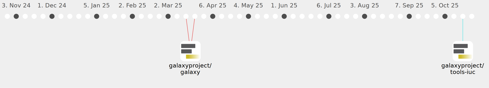

Galaxy Community Activities
d-callan
d-callan
https://github.com/d-callan
Commits all-time:
34
Commits last year:
34

galaxyproject/tools-iuc
(20)
475a683
51a9428
fdfe4f3
1e19557
2fa229d
9cdb1eb
7ddc22a
5951916
b6d2856
ae5fd89
f7c792a
afb9100
927b2ff
8f0db8f
3fa28b3
7dfda0b
e056b87
03f262a
5dce81f
5ddea58
galaxyproject/galaxy
(14)
2cec90b
f538d8f
a0e918f
027d249
b97fb98
6f0bf37
2268ca2
29abc90
c09638b
88b32fd
b29798a
8d984a2
7034b4b
04c5b46